No.01
足元のカスタム
各種カスタムもお任せ下さい
いつもお客様のニーズに合った
ご提案いたします！
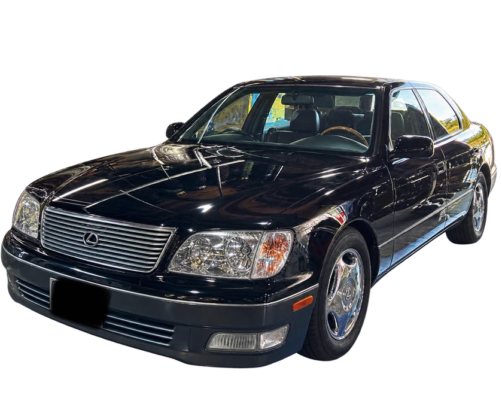
16
車からさがす車からさがす
軽自動車から大径ホイール、ローダウンの車まで。
グーネットピットに載せた作業の記録から。
24件の記録
No.02
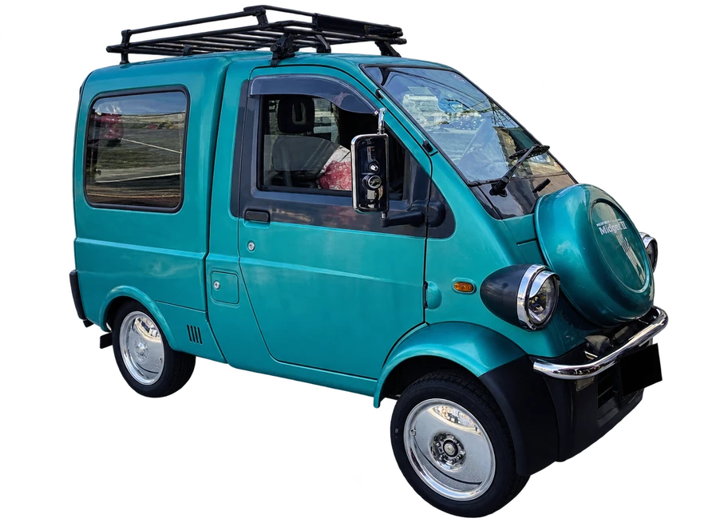
No.03
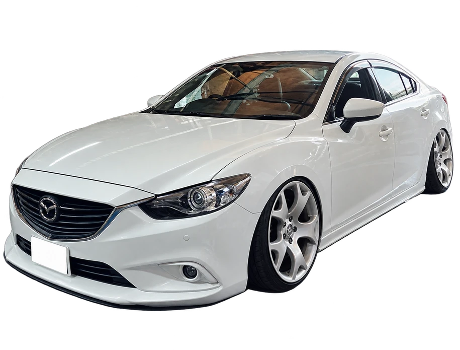
No.04
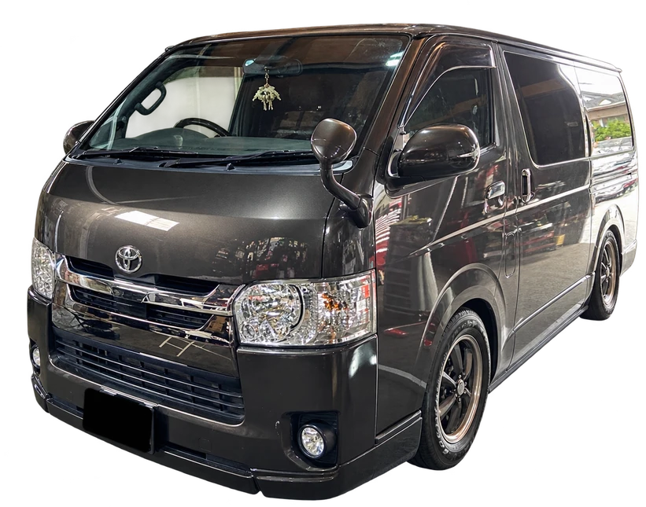
No.05
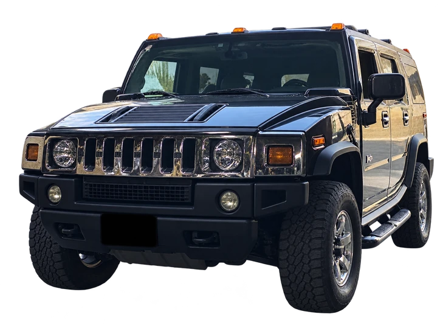
No.06
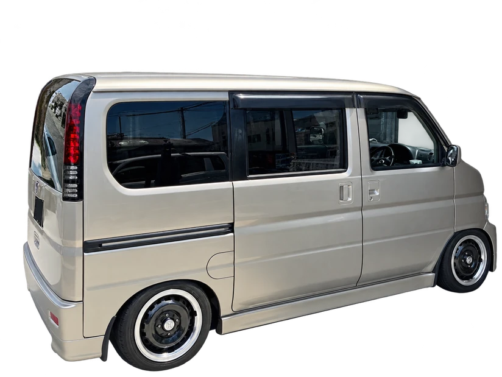
No.07
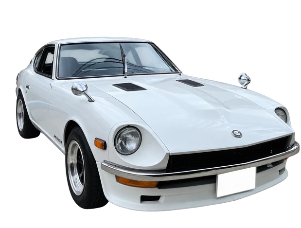
No.08
No.09
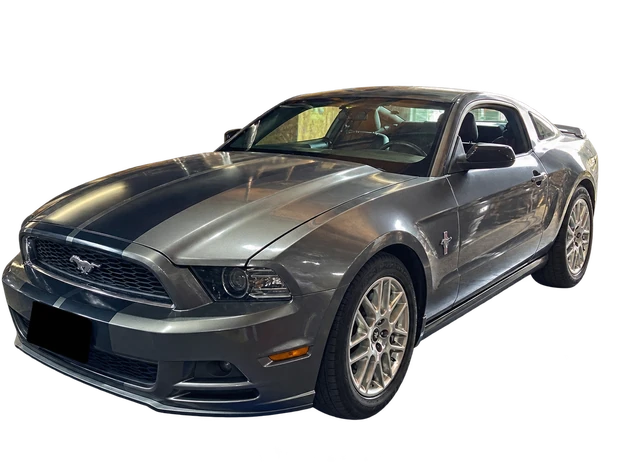
No.10
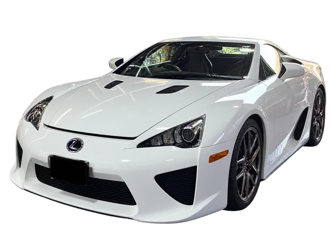
No.11
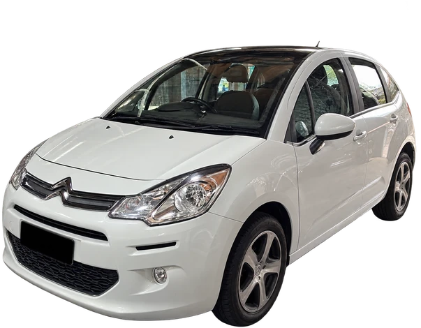
No.12
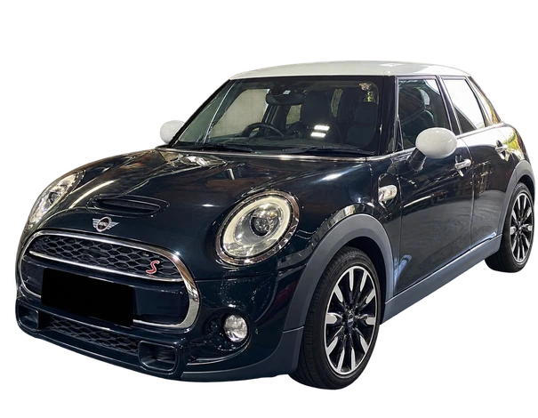
No.13
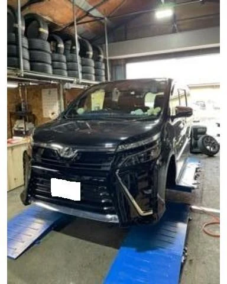
No.14
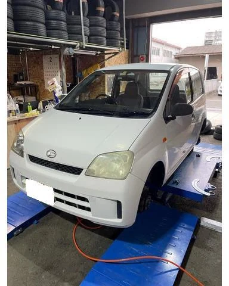
No.15
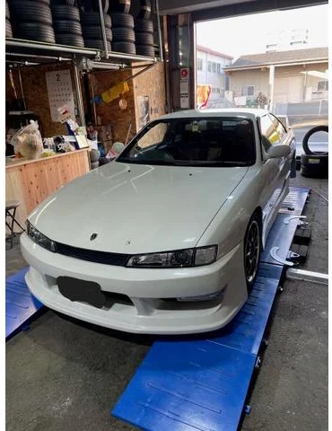
No.16
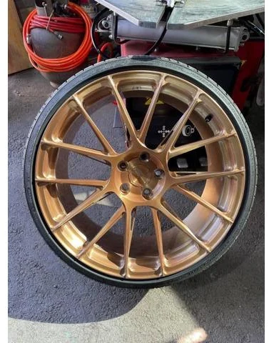
No.17
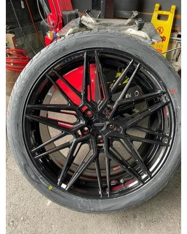
No.18
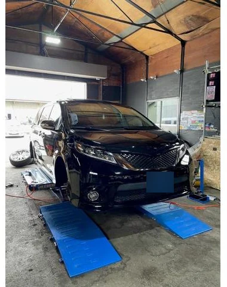
No.19
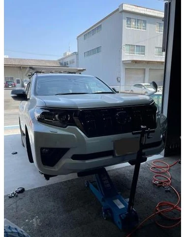
No.20
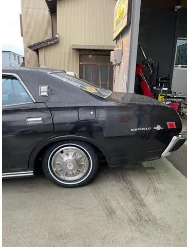
No.21
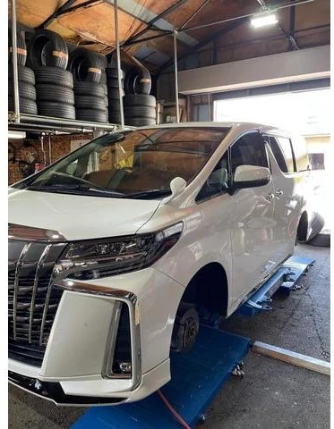
No.22
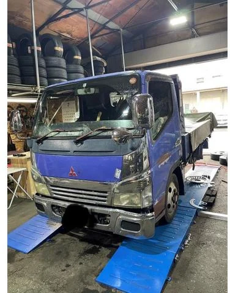
No.23
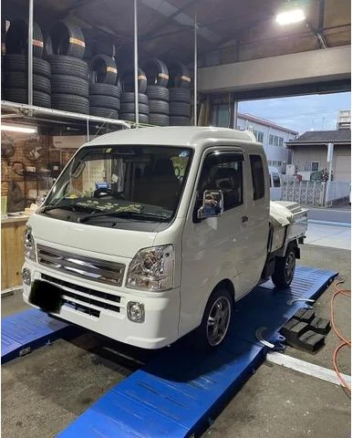
No.24
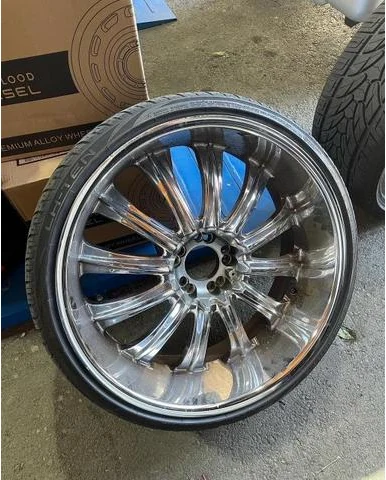